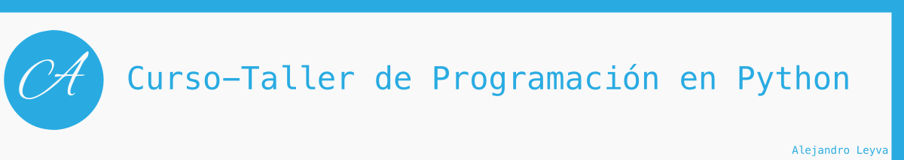

5 Ingresando dato y cómo convertirlos
5.1 Función input()
La función input sirve para leer datos desde teclado en la terminal.
Sintaxis:
input(prompt)
Parámetros
prompt (opcional): Es un string que se puede colocar para que aparezca antes del ingreso de datosreturn: Regresa el texto que ingresen desde terminal : (str)
Ejemplo:
Cuando queremos recibir datos del usuario debemos guardarla en una variable para posteriormente utilizarla. Recordemos que nos regresara esa información en tipo str.
datos = input()
print('Ingreso de datos')
datos = input()
print('impresion de datos')
print(datos)
Ingreso de datos
Hola
impresion de datos
Hola
Ahora si queremos que el usuario vea un mensaje y a continuación coloque los datos, debemos pasar el valor para el argumento prompt entre los paréntesis.
edad = input("Dar la edad")
edad = input("Dar edad: ")# devuelve un str
print("Tu edad es: " + edad)
Dar edad: 50
Tu edad es: 50
5.2 Función int()
En muchas ocasiones puedes tener un número entero almacenado en una variable pero no exactamnete es tipo número. Entonces, en ese caso necesitamos que sea de tipo int para poder realizar operaciones con él. Para esos casos contamos con la función int()
Sintaxis:
int(value, base)
parámetros:
value: Un número o un string que puede ser convertido a número enterobase (opcional) : El formato con el que representa el número. Default value: 10base: 10 -> decimal (Valor por default)base: 2 -> binariobase: 16 -> hexadecimalreturn: el valor en tipo int (decimal por default)
decimal = int("100") # el valor es decimal, por default lo toma así
binario = int("1010", 2) # el valor que pasamos esta en binario
hexadecimal = int("FF",16) #el valor que pasamos esta en hexadecimal
print(decimal)
print(binario)
print(hexadecimal)
100
10
255
5.3 Función float()
En muchas ocasiones puedes tener un número de punto flotante almacenado en una variable pero no exactamnete es tipo número. Entonces, en ese caso necesitamos que sea de tipo float para poder realizar operaciones con él. Para esos casos contamos con la función float()
Sintaxis:
float(value)
parámetros:
value: Un número o string que puede ser convertido en tipo número floatreturn: Regresa un tipo float
altura = float("1.680000")
valor = float("4.3")
un_medio = float(".5")
print(altura)
print(valor)
print(un_medio)
1.68
4.3
0.5
5.4 Función bool()
En muchas ocasiones puedes tener una expresión booleana almacenado en una variable pero no exactamente es tipo booleano. Entonces, en ese caso necesitamos que sea de tipo boolean para poder realizar operaciones con él. Para esos casos contamos con la función bool()
Sintaxis:
bool(object)
Parámetros
object: Cualquier objet, string, lista, numero, etc.return: Regresa un tipo boolean
La función siempre regresa True, a menos que:
- El objetos esté vacío, como
[],(),{} - El objeto es
False - El objeto es
0 - El objeto es
None - Cadena vacia
""
En todos estos casos, retorna False
uno = bool(1)
cero = bool(0)
falso = bool(False)
verdadero = bool(True)
texto = bool("hola")
texto_vacio = bool("")
print(uno)
print(cero)
print(falso)
print(verdadero)
print(texto)
print(texto_vacio)
True
False
False
True
True
False
Aplicaciones
1. Pedir dos números e imprimir el resultado**
print("Mi super calculador de 2 números")
valor1 = int(input("Dar el valor 1: "))
valor2 = int(input("Dar el valor 2: "))
suma = valor1 + valor2
print("El resultado es: " + str(suma))
Mi super calculador de 2 números
Dar el valor 1: 5
Dar el valor 2: 6
El resultado es: 11
2. Calculadora de Segunda Ley
# F = m * a
print("Calculadora de Segunda Ley - Fuerza")
masa = float( input("Dar el valor de la masa (kg):" ) )
aceleracion = float( input("Dar el valor de la aceleración (m/s^2):" ) )
fuerza = masa * aceleracion
print("la fuerza es: " + str(fuerza)+ "N")
Calculadora de Segunda Ley - Fuerza
Dar el valor de la masa (kg):25
Dar el valor de la aceleracion (m/s^2):36
la fuerza es: 900.0N
3. Programa que calcule las resistencias en serie, el usuario debe ingresar 3 resistencias
print("Dar tres resistencias para obtener su valor en serie")
print("Dar valores en ohms")
resistencia1 = float( input("Valor de resistencia 1: ") )
resistencia2 = float( input("Valor de resistencia 2: ") )
resistencia3 = float( input("Valor de resistencia 3: ") )
resistencia_total = resistencia1 + resistencia2 + resistencia
print("El valor total en serie es " + str(resistencia_total) + " ohms")
Ejercicios
- Hacer un programa que calcule el area y el perímetro del circulo, pidiendo los datos al usuario
- Hacer un programa que calcule 3 resistencias en paralelo, solicitando la información al usuario
Realizado por el Instructor: Alejandro Leyva